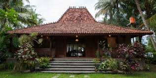
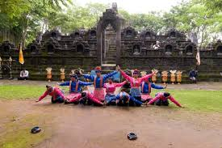
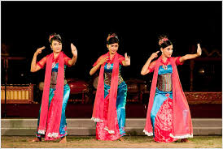

Rumah Adat Nusantara
Indonesia memiliki lebih dari 30 jenis rumah adat yang mencerminkan kearifan lokal dan identitas budaya setiap daerah.
Rumah Gadang
Sumatera Barat
Rumah adat Minangkabau dengan atap berbentuk tanduk kerbau yang ikonik.
Tongkonan
Sulawesi Selatan
Rumah adat Toraja dengan atap melengkung menyerupai perahu.

Joglo
Jawa Tengah
Rumah adat Jawa dengan atap menjulang tinggi sebagai simbol kemakmuran.
Tarian Tradisional
Setiap daerah di Indonesia memiliki tarian khas yang menceritakan kisah, upacara, dan kehidupan masyarakat.
Tari Pendet
Bali
Tarian penyambutan yang anggun sebagai persembahan kepada dewa.

Tari Saman
Aceh
Tarian seribu tangan yang menampilkan kekompakan luar biasa.

Tari Jaipong
Jawa Barat
Tarian dinamis yang menggabungkan pencak silat dan ketuk tilu.
Kuliner Nusantara
Kekayaan rempah Indonesia menghasilkan ragam kuliner yang diakui dunia.
Rendang
Sumatera Barat
Masakan daging berbumbu rempah yang pernah dinobatkan sebagai makanan terenak dunia.
Gudeg
Yogyakarta
Masakan nangka muda yang dimasak dengan santan dan gula merah.
Papeda
Papua
Makanan pokok khas Papua dari sagu yang disajikan dengan kuah ikan.
Uji Pengetahuanmu!
Jawab pertanyaan berikut untuk menguji pemahamanmu tentang budaya Indonesia.